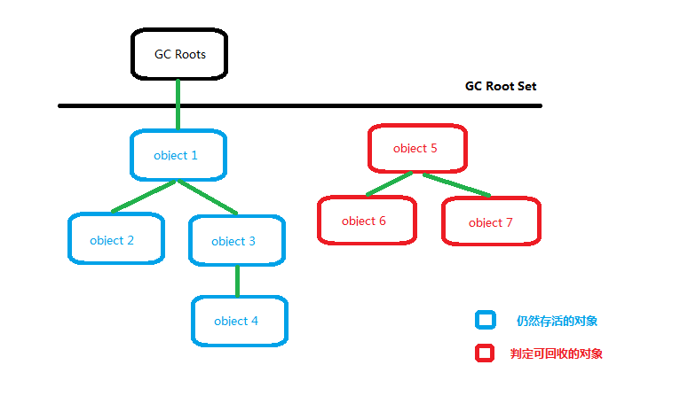
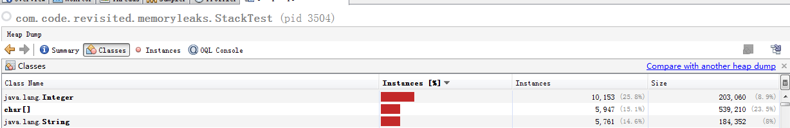
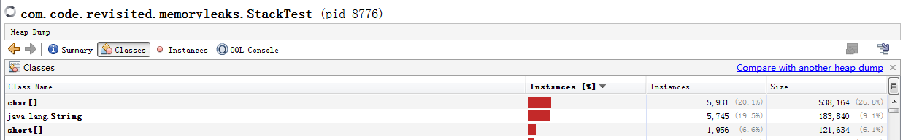

1.《深入理解java虚拟机 JVM高级特性与最佳实践》
2. http://coderevisited.com/memory-leaks-in-java/
要进行JVM中对象回收首先要判断对象是否已经死亡，判断的方法有如下几个：
### 1.引用计数法
给对象中添加一个引用计数器，每当有一个地方引用它时，计数器值就加1；当引用失效时，计数器值就减1；任何时刻 计数器为0的对象就是不可能再被使用的。
但是主流的java虚拟机里面没有选用引用计数器算法来管理内存，其中最主要的原因是它很难解决对象之间相互循环引用的问题。
### 2.可达性分析算法
这个算法的基本思想就是通过一系列的称为“GC Roots”的对象作为起始点，从这些节点开始向下搜索，搜索所走过的路径称为引用链，当一个对象到GC Roots没有任何引用链相连接时，则证明此对象是不可用的。如下图所示，对象object5、object6、object7虽然互相有关联，但是它们到GC Roots是不可达的，所以它们将会被判定为是可回收对象。

java 堆内存泄漏,是由于java对象不停创建但是没有释放对象引用导致的。 以下是关于java代码，此代码是引自http://coderevisited.com/memory-leaks-in-java/
类com.code.revisited.memoryleaks.Stack提供了实现栈的一些方法，包括遍历，入栈，出栈等操作。假设原来目的是为了现实使用（当然这里是为了解释内存泄漏）。
package com.code.revisited.memoryleaks;
import java.util.Iterator;
import java.util.NoSuchElementException;
/**
* @author sureshsajja
*
*/
public class Stack<E> implements Iterable<E> {
private int N;
private E[] array;
@SuppressWarnings("unchecked")
public Stack(int capacity) {
array = (E[]) new Object[capacity];
}
@Override
public Iterator<E> iterator() {
return new StackIterator();
}
private class StackIterator implements Iterator<E> {
private int i = N - 1;
@Override
public boolean hasNext() {
return i >= 0;
}
@Override
public E next() {
if (!hasNext()) {
throw new NoSuchElementException();
}
return array[i--];
}
@Override
public void remove() {
throw new UnsupportedOperationException();
}
}
public void push(E item) {
if (isFull()) {
throw new RuntimeException("Stack overflow");
}
array[N++] = item;
}
public E pop() {
if (isEmpty())
throw new RuntimeException("Stack underflow");
E item = array[--N];
return item;
}
public boolean isEmpty() {
return N == 0;
}
public int size() {
return N;
}
public boolean isFull() {
return N == array.length;
}
public E peek() {
if (isEmpty())
throw new RuntimeException("Stack underflow");
return array[N - 1];
}
}类com.code.revisited.memoryleaks.StackTest用于执行栈操作。要进行入栈及出栈10000次操作，理想是入栈时分配堆内存，出栈后对象被回收。
package com.code.revisited.memoryleaks;
/**
* @author sureshsajja
*
*/
public class StackTest {
/**
* @param args
*/
public static void main(String[] args) {
Stack<Integer> s = new Stack<Integer>(10000);
for (int i = 0; i < 10000; i++) {
s.push(i);
}
while (!s.isEmpty()) {
s.pop();
}
while (true ) {
// do something
}
}
} 执行开始。我们使用VisualVM进行观察。为了更明显一些，将栈操作部分代码注释也执行一下。
package com.code.revisited.memoryleaks;
/**
* @author sureshsajja
*
*/
public class StackTest {
/**
* @param args
*/
public static void main(String[] args) {
// Stack<Integer> s = new Stack<Integer>(10000);
// for ( int i = 0; i < 10000; i++) {
// s.push(i);
// }
//
// while (!s.isEmpty()) {
// s.pop();
// }
while (true ) {
// do something
}
}
}把栈操作的设为1号，没有栈操作的设置为2号，分别生成Heap Dump文件，我们看一下类实例的截图：
#### 首先是1号截图

#### 2号截图

显然预期的栈操作出栈后并没有释放掉Integer对象的引用（实际上看代码也知道），所以不会被GC回收。真正的实际情况这种引用将会很隐蔽，但是根本总是由于对象仍然被引用。
本篇仅对java堆内存泄漏进行了简单说明，下一篇将讨论其他相关的内存泄漏。有不对的地方欢迎拍砖>_<